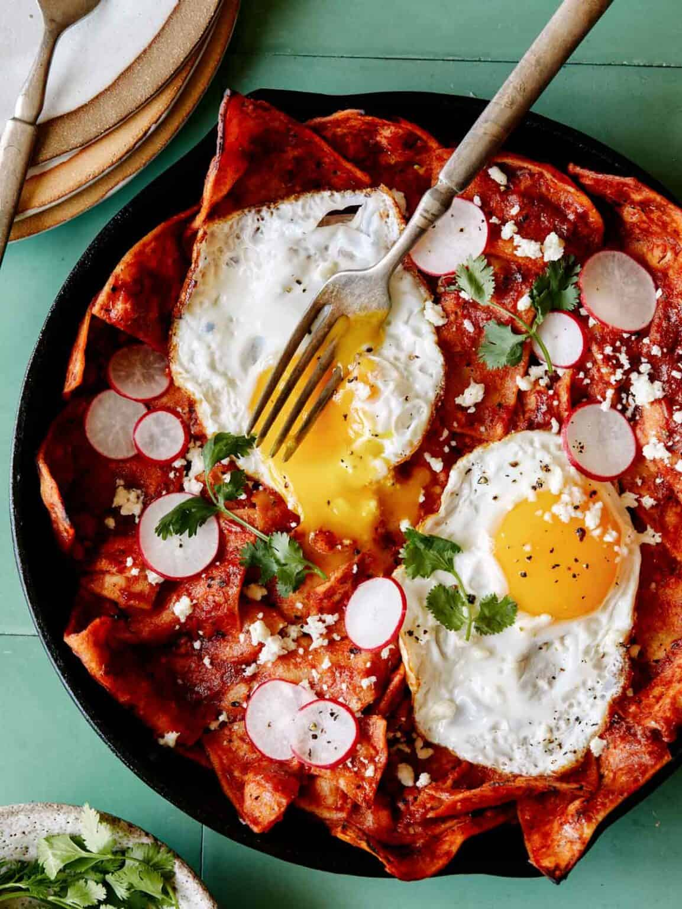

Chilaquiles is a traditional Mexican comfort food, primarily served at breakfast, that centers on corn tortillas. The tortillas are cut into triangles and lightly fried until crisp, then simmered in either a vibrant salsa roja (red tomato and chili sauce) or a tangy salsa verde (green tomatillo sauce). The goal is to cook them just long enough for the chips to soften slightly while still retaining a bit of their structural integrity.
To finish the dish, it is traditionally topped with crumbled queso fresco, sliced raw onions or radishes, and fresh cilantro. It is frequently made heartier by adding a fried or scrambled egg on top. Because of its savory, spicy nature and satisfying texture, it is widely beloved both as a family staple and my personal favorite dish.